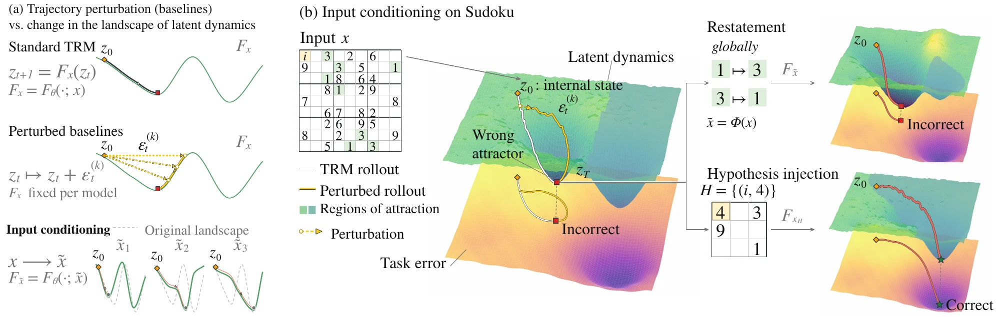
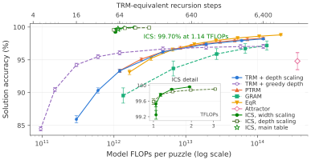
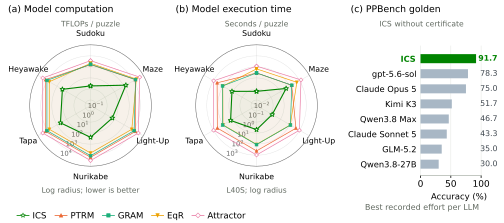
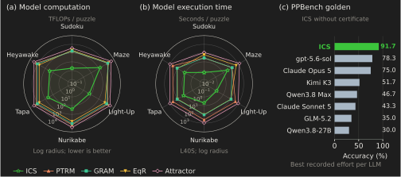
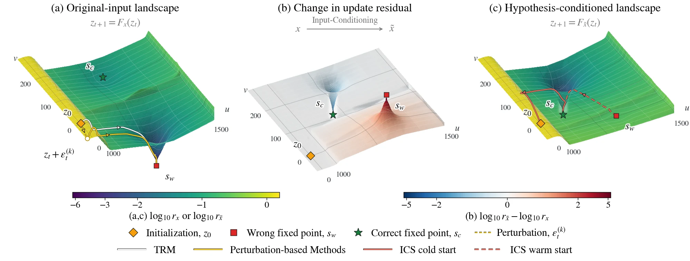
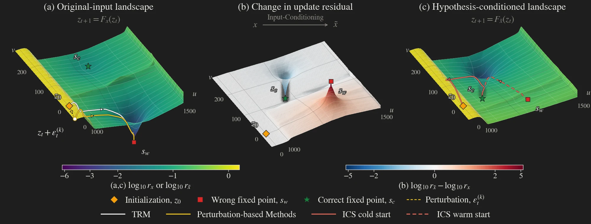
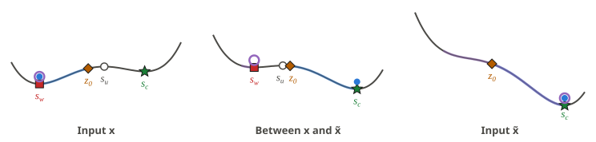

Problem. People facing a hard problem tend to spend more effort on it, by thinking more deeply (depth) or exploring more possibilities (width). Recursive reasoners, which reason by repeatedly applying a learned update rule to a latent state, can scale test-time compute in the same two ways: more updates (depth) or additional perturbed trajectories (width). When people hit a dead end, they may step back and approach the problem from a fresh angle. Neither depth nor perturbation-based width scaling of recursive reasoners can reliably do this: both keep the same update map, and their trajectories may converge to incorrect attractors.
Motivation. Explore diverse reasoning traces by applying different update maps to the same latent state, without any additional training. The update map itself then becomes a new axis of efficient test-time scaling.
Method. Input-Conditioned Search (ICS) obtains these maps from the frozen reasoner by changing its input condition: it writes the model's own tentative predictions into the input (hypothesis injection) or restates the task in an equivalent form (validity-preserving restatements), and restarts reasoning from the initial state under each condition.
Results. Across six reasoning tasks, ICS achieves the highest mean accuracy with up to two orders of magnitude fewer model FLOPs than the evaluated scaling baselines. Controlled interventions confirm that changing the input condition can redirect trajectories from the same state.
Test-time scaling of recursive reasoners

More accurate, with far less compute
On Sudoku-Extreme, ICS reaches 99.70% accuracy at 1.14 TFLOPs per puzzle without a correctness checker, removing about 92% of the remaining errors of the strongest baseline at comparable compute. No evaluated scaling baseline reaches this accuracy, even with more than 100 times the compute of ICS.

Across six tasks (Sudoku-Extreme, Maze-Hard, and the PPBench puzzles Light-Up, Nurikabe, Tapa and Heyawake), ICS has the highest mean accuracy against depth scaling of TRM, PTRM, GRAM, EqR and Attractor Models, with or without a correctness checker at answer selection, tying at 100.0% on Light-Up. It also has the lowest model computation and execution time per puzzle on every task. On the PPBench golden set, it reaches 91.7% against 78.3% for the strongest evaluated language model.
Accuracy and cost on each task, and the comparison with language models
| Method | Sudoku | Maze | Light-Up | Nurikabe | Tapa | Heyawake |
|---|---|---|---|---|---|---|
| Correctness checker available at selection | ||||||
| Standard TRM | 86.0 ± 0.6 | 91.6 ± 0.3 | 99.7 ± 0.5 | 83.8 ± 2.8 | 72.8 ± 5.4 | 86.4 ± 3.3 |
| + depth scaling | 98.2 ± 0.1 | 91.6 ± 0.3 | 100.0 ± 0.0 | 84.9 ± 2.7 | 75.4 ± 5.5 | 87.8 ± 1.5 |
| PTRM | 98.3 ± 0.1 | 92.4 ± 0.3 | 100.0 ± 0.0 | 86.1 ± 2.3 | 76.4 ± 6.9 | 88.7 ± 1.5 |
| GRAM | 97.5 ± 0.4 | 90.8 ± 0.6 | 99.7 ± 0.5 | 91.9 ± 1.8 | 52.3 ± 5.5 | 97.1 ± 1.3 |
| EqR | 98.8 ± 0.1 | 95.0 ± 1.9 | 91.4 ± 0.5 | 77.1 ± 0.5 | 26.7 ± 0.9 | 31.6 ± 2.7 |
| Attractor | 94.8 ± 1.3† | 80.7 ± 1.4 | 100.0 ± 0.0 | 89.0 ± 2.2 | 82.2 ± 4.6 | 94.2 ± 2.2 |
| ICS | 99.94 ± 0.02 | 100.0 ± 0.1 | 100.0 ± 0.0 | 95.9 ± 1.3 | 95.9 ± 0.9 | 99.1 ± 0.0 |
| No correctness checker at selection | ||||||
| Standard TRM | 86.0 ± 0.6 | 91.6 ± 0.3 | 99.7 ± 0.5 | 83.8 ± 2.8 | 72.8 ± 5.4 | 86.4 ± 3.3 |
| + depth scaling | 98.1 ± 0.1 | 85.1 ± 0.9 | 99.7 ± 0.5 | 80.9 ± 1.7 | 67.7 ± 4.1 | 84.3 ± 3.0 |
| PTRM | 98.3 ± 0.1 | 91.8 ± 0.3 | 100.0 ± 0.0 | 84.9 ± 3.1 | 74.9 ± 6.2 | 88.7 ± 1.5 |
| GRAM, LPRM | 97.2 ± 0.7 | 84.7 ± 1.6 | 99.1 ± 0.9 | 86.1 ± 3.8 | 43.1 ± 5.3 | 93.6 ± 0.5 |
| GRAM, majority | 96.6 ± 0.6 | 85.2 ± 1.4 | 99.4 ± 1.0 | 86.1 ± 4.0 | 43.1 ± 1.5 | 93.6 ± 0.5 |
| EqR | 98.8 ± 0.1 | 87.4 ± 1.8 | 80.2 ± 0.5 | 57.7 ± 1.0 | 17.4 ± 0.9 | 18.8 ± 1.3 |
| Attractor | 94.8 ± 1.3† | 53.6 ± 1.6 | 100.0 ± 0.0 | 87.6 ± 1.8 | 78.1 ± 5.7 | 92.2 ± 2.3 |
| ICS | 99.70 ± 0.08 | 99.1 ± 0.2 | 100.0 ± 0.0 | 88.4 ± 5.9 | 86.7 ± 0.9 | 94.5 ± 1.0 |


Change how it reasons, not where it starts
A recursive reasoner reads its input at every update, so changing the input changes how it reasons: the same frozen weights follow a new update map. ICS builds new inputs in two ways. Hypothesis injection writes the model's own tentative predictions into the input, starting where the model is least confident. Validity-preserving restatements rewrite the task as an equivalent one, such as the same Sudoku with its digits relabeled, and map the answer back. Every run starts from the same initial state, and every answer is judged on the original input.
The walkthrough below replays one Sudoku-Extreme puzzle with the released TRM: the run on the original input fails, and one injected hypothesis lets a fresh run solve it.
Why it works
A new map moves the failed state
On one Maze-Hard puzzle, the run on ends at an incorrect near-fixed point , where the relative update is only about 2.4 × 10⁻⁷. ICS changes the update map, not the state: under the new input , the relative update at the same is 0.225, so is no longer stationary, and runs from and from both reach the correct fixed point .


A new map can remove an incorrect attractor
As the input moves from to , the incorrect fixed point can meet an unstable fixed point and vanish with it: a fold, or saddle-node bifurcation. We certify such local folds in trained recursive reasoners with computer-assisted proofs. Even before the fold, the run from can reach the correct fixed point while the run from the failed state stays at , which is why ICS restarts every run from .

Please refer to our paper for the theory and more details.
What's next? Shaping reasoning dynamics
ICS makes the update map itself an axis of test-time scaling. Searching over input-conditioned maps gives a frozen recursive reasoner access to different reasoning dynamics, and makes those dynamics an actionable target for improving accuracy and efficiency.
This points to a broader direction: shaping recursive dynamics during training and adapting them at test time. Can we learn reasoners whose dynamics are easier to steer toward correct solutions? Can test-time search find effective input interventions with less computation? Understanding how attractors, their basins and convergence affect reasoning could guide the joint design of training objectives and inference procedures.
Citation
If you find this work useful, please cite:
@article{shi2026ics,
title = {Input-Conditioned Search for Efficient Test-Time Scaling of Recursive Reasoners},
author = {Haochen Shi and Tianwen Fu and Qianggang Ding and Yinhan Lu and Yizhan Li and Huan Zhang and Yajie Zhao and Xingdi Yuan and Hengyang Lu and Bang Liu},
journal = {arXiv preprint arXiv:XXXX.XXXXX},
year = {2026}
}